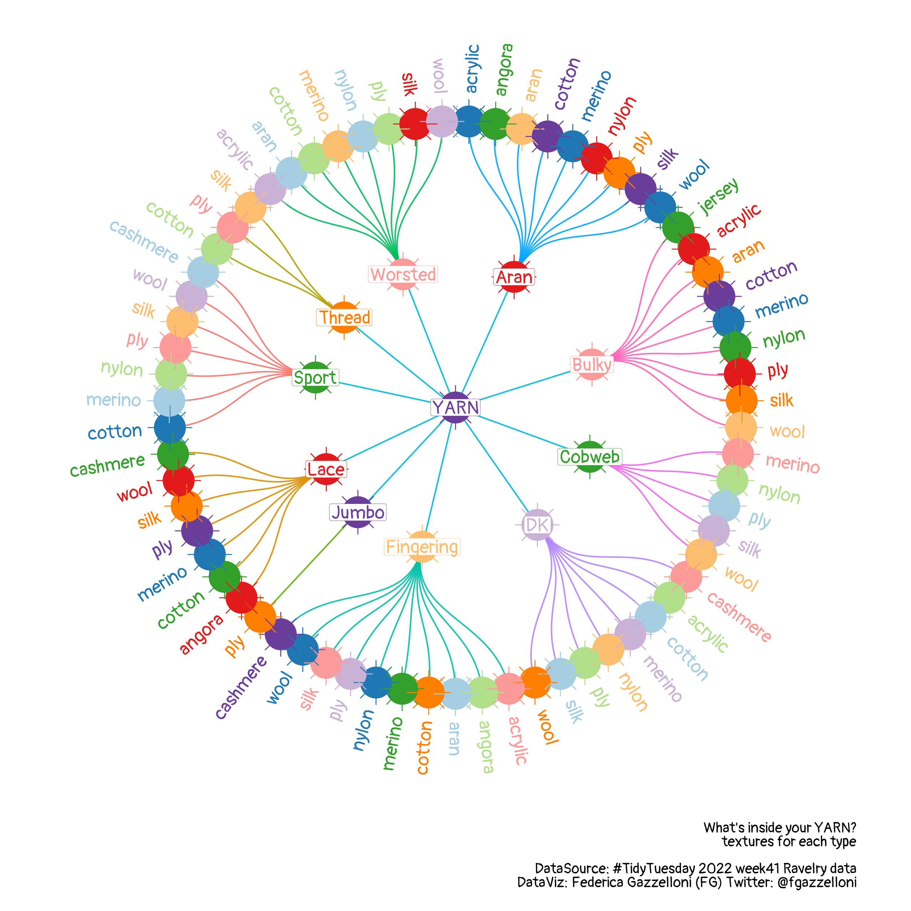

library(tidyverse)
library(igraph)
library(ggraph)
library(RColorBrewer)
library(showtext)
library(sysfonts)
library(extrafont)
showtext::showtext_auto()
showtext::showtext_opts(dpi=320)
font_add_google(name="Pangolin",family="pangolin")Yarn: hierarchical edge bundling visualization
Hierarchical edge bundling visualization in R using TidyTuesday Ravelry yarn data, igraph, and ggraph.
Overview
This post is all about hierarchical edge bundling visualization, the dataset comes from #TidyTuesday 2022 week 41 Ravelry data.
The picture below is the result of the hierarchical edge bundling visualization.

First thing load the libraries and set the fonts:
Helpful tip is how to set the dpi option inside the showtext::showtext_opts function. This sets the size of your text, and it can be very useful when used in conjunction with the same option inside the ggsave function. If showtxet dpi is of a certain value, then you should set the ggsave dpi lower than that value to balance the text size outcome in your final .png file.
A perfect result comes from a nice balance trade-off between the dpi of the two functions.
Let’s have a look at the data, there are 100000 observation and 24 variables referring to the various types of yarns, companies, names, yardage, weights, textures, ratings, …
yarn <- readr::read_csv('https://raw.githubusercontent.com/rfordatascience/tidytuesday/master/data/2022/2022-10-11/yarn.csv')
yarn%>%dimyarn%>%namesLet’s select the names, the textures and the yardage for the length of the yarn, which is different from type to type.
yarn %>%
select(yarn_weight_name,
texture_clean,
texture_clean,yardage)%>%
head()And, tidy the texture_clean a bit more, grouping for most common texture names such as merino, acrylic, cotton, nylon, aran, cashmere, wool, silk, jersey,…and calculate the yardage average.
Tidy data:
df <- yarn%>%
mutate(
texture_clean=case_when(str_detect(texture_clean,
"merino")~"merino",
str_detect(texture_clean,
"ply|plied|play|plies")~"ply",
str_detect(texture_clean,
"acrylique|acrylic|polyacryl|acrilyc|acryt")~"acrylic",
str_detect(texture_clean,"nylon")~"nylon",
str_detect(texture_clean,"cotton")~"cotton",
str_detect(texture_clean,"wool")~"wool",
str_detect(texture_clean,"polyamide|polyamid")~"polyamid",
str_detect(texture_clean,"angora")~"angora",
str_detect(texture_clean,"cashmere")~"cashmere",
str_detect(texture_clean,"aran")~"aran",
str_detect(texture_clean,"silk")~"silk",
str_detect(texture_clean,"jersey")~"jersey",
TRUE~texture_clean))%>%
filter(str_detect(texture_clean,
c("merino|ply|acrylic|nylon|cotton|wool|angora|cashmere|aran|silk|jersey")))%>%
count(texture_clean,yarn_weight_name,yardage,grams) %>%
mutate(yarn_weight_name=case_when(yarn_weight_name=="Aran / Worsted"~"Aran",
yarn_weight_name=="DK / Sport"~"DK",
yarn_weight_name=="Light Fingering"~"Fingering",
yarn_weight_name=="Super Bulky"~"Bulky",
TRUE~yarn_weight_name))%>%
filter(!yarn_weight_name=="No weight specified",!is.na(yarn_weight_name))%>%
filter(!is.na(yardage),!is.na(grams))%>%
select(-n)%>%
group_by(yarn_weight_name,texture_clean)%>%
summarise_all(.funs=mean)%>%
select(yarn_weight_name,texture_clean,yardage)df%>%headShape the data for making the hierarchical edge bundling visualization.
Now, for setting the data ready for being used inside one of the {ggraph} functions, a new vector is created named YARN. This is done to have a central point to all the yarns’ types.
So, what is needed is a dataframe with two columns from and to. Actually, what is needed are two dataframe hierarchy and vertices. As follow:
d1<- df%>%
select(-texture_clean,-yardage)%>%
mutate(from = "YARN",.before=everything())%>%
rename(to = yarn_weight_name)
d2 <- df%>%
select(-yardage) %>%
rename(from = yarn_weight_name,
to = texture_clean)
hierarchy <- rbind(d1, d2)
vertices <- data.frame(name = unique(c(as.character(hierarchy$from),
as.character(hierarchy$to))) ) Hierarchy:
hierarchy%>%headVertices:
vertices%>%headThen create the graph and the layout with graph_from_data_frame() function.
mygraph <- graph_from_data_frame(hierarchy, vertices=vertices )ggraph(mygraph, layout = 'dendrogram', circular = F) +
geom_edge_diagonal()ggraph(mygraph, layout = 'dendrogram', circular = T) +
geom_edge_diagonal()+
geom_node_point(color="navy",size=5)I can even filter the leafs out to point just the main nodes:
ggraph(mygraph, layout = 'dendrogram', circular = T) +
geom_edge_diagonal()+
geom_node_point(aes(filter=!leaf),
color="navy",
size=5)I like the circular type, and we can have a look at the inside calculation of the function with create_layout() specifying the type of layout as a dendrogram. It is a dataframe graph and it has the x, and y vectors, the leafs, and the names and other specifications.
df1 <- create_layout(mygraph, layout = 'dendrogram')
df1%>%classdf1%>%head()To add the labels to the leafs they would need to be oriented by a specific angle level, the reason for this is that the subgroups are not all the same.
What is needed is a function for node angle adjustments and another similar function to adjust the horizontal distance of the text around the dendrogram. Likely the {ggraph} package provides a function for calculating the angles of your data:
- node_angle(x,y)node_angle(df1$x,df1$y,degrees = T)%>%head()These values need to be adjusted:
node_ang_adj <- function(x,y) {
ifelse(node_angle(x,y) > 90 & node_angle(x,y) < 270 ,
node_angle(x,y) + 180, node_angle(x,y))
}
node_hjust_adj <- function(x,y) {
ifelse(node_angle(x,y) > 90 & node_angle(x,y) < 270 , 1,0)
}Finally, we can make the hierarchical edge bundling visualization type circular dendrogram:
ggraph(mygraph, layout = 'dendrogram', circular = TRUE) +
geom_edge_diagonal(aes(color=factor(x)),
alpha=0.9,
show.legend = F) +
geom_node_point(aes(color=factor(x)),
size=10,
show.legend = F)+
geom_node_point(aes(color=factor(x)),
size=10,
shape=8,
show.legend = F)+
geom_node_label(aes(filter=!leaf,label=name,color=factor(x)),
label.padding = unit(0.1, "lines"),
label.r = unit(0.1, "lines"),
label.size = 0.1,
family = "pangolin",
fontface="bold",
show.legend = F,
size=4,
alpha=1)+
geom_node_text(aes(x = x*1.1,
y=y*1.1,
hjust = node_hjust_adj(x,y),
angle=node_ang_adj(x,y),
filter = leaf,
label=name,
color=factor(x)),
family = "pangolin",
fontface="bold",
show.legend = F,
size=4,
alpha=1)+
scale_color_manual(values = rep(RColorBrewer::brewer.pal(10,"Paired"),10))+
scale_x_discrete(expand = c(0,0.3))+
scale_y_discrete(expand = c(0,0.3))+
coord_fixed()+
labs(caption="What's inside your YARN?\ntextures for each type\n\nDataSource: #TidyTuesday 2022 week41 Ravelry data\nDataViz: Federica Gazzelloni (FG) Twitter: @fgazzelloni\n",
alt="Infographics") +
theme_graph()+
theme(plot.margin = margin(5,5,5,5,unit = "pt"),
plot.caption = element_text(face="bold",family="pangolin"))Save it with setting dpi:
ggsave("featured.png",
dpi=280,
bg="white",
width = 9,height = 9)